import pandas as pd
import numpy as np
from sklearn.preprocessing import MinMaxScaler
import statsmodels.api as sm
from adjustText import adjust_text
import seaborn as sns
import matplotlib.pyplot as pltGiriş
2024 Avrupa Futbol Şampiyonası’nın final maçında İspanya ve İngiltere mücadele edecek*. Biz de maç öncesinde gollerde belirleyici olacak değişkenleri belirlemeye çalışalım.
Çalışmanın sonuçlarını maç öncesinde paylaşmıştım. Model bize İspanya’nın şampiyon olacağını söylüyordu.
Kullanılacak Kütüphaneler
Veri Setinin İçe Aktarılması ve Verilerin Dönüştürülmesi
Model kurarken tüm değişkenlerin Z-skor ile normalize edilmiş hallerini kullanacağız. Öncesinde ise aşağıdaki dönüşümleri uygulayacağız.
- Goals: (Atılan Gol Sayısı / Maç Sayısı) * Log(Maç Sayısı)
- Attempts: (Şut Sayısı / Maç Sayısı) * Log(Maç Sayısı)
- Attacks: (Atak Sayısı / Maç Sayısı) * Log(Maç Sayısı)
- Dribbles: (Top Sürme Sayısı / Maç Sayısı) * Log(Maç Sayısı)
- Balls Recovered: (Top Ele Geçirme Sayısı / Maç Sayısı) * Log(Maç Sayısı)
- Tackles: (Müdahale Sayısı / Maç Sayısı) * Log(Maç Sayısı)
- Fouls Committed: (Yapılan Fauller / Maç Sayısı) * Log(Maç Sayısı)
- Fouls Suffered: (Uğranılan Fauller / Maç Sayısı) * Log(Maç Sayısı)
Veri setine buradan ulaşabilirsiniz.
scaler = MinMaxScaler()
df = pd.read_excel('euro_2024_final.xlsx')
df = df.set_index('Team')
df['Transformed Goals'] = df['Goals'] / df['Matches Played'] * np.log(df['Matches Played'])
df['Transformed Goals'] = scaler.fit_transform(df[['Transformed Goals']])
transformed_columns = [
'Transformed Attempts',
'Transformed Attacks',
'Transformed Dribbles',
'Transformed Balls Recovered',
'Transformed Tackles',
'Transformed Fouls Committed',
'Transformed Fouls Suffered'
]
for col in transformed_columns:
df[col] = df[col.replace('Transformed ','')] / df['Matches Played'] * np.log(df['Matches Played'])
columns_to_keep = [col for col in df.columns if 'Transformed' in col] + ['Passing Accuracy', 'Crossing Accuracy']
df = df[columns_to_keep]Modelin Kurulması
Modelde Kullanılacak Değişkenlerin İncelenmesi
correlations = {}
for col in columns_to_keep:
if col != 'Transformed Goals':
corr, _ = pearsonr(df['Transformed Goals'], df[col])
correlations[col] = corr
for i, col in enumerate(columns_to_keep):
if col != 'Transformed Goals':
plt.figure(figsize=(12, 8))
sns.scatterplot(data=df, x=col, y='Transformed Goals')
texts = [plt.text(row[col], row['Transformed Goals'], team) for team, row in df.iterrows()]
adjust_text(texts, arrowprops=dict(arrowstyle='->', color='red'))
plt.title(f'Goals vs {col.replace("Transformed ", "")}\nCorrelation: {correlations[col]:.2f}')
plt.ylabel('Goals')
plt.xlabel(f'{col.replace("Transformed ", "")}')
plt.tight_layout()
plt.show()
elif col in ['Passing Accuracy', 'Crossing Accuracy']:
plt.figure(figsize=(12, 8))
sns.scatterplot(data=df, x=col, y='Transformed Goals')
texts = [plt.text(row[col], row['Transformed Goals'], team) for team, row in df.iterrows()]
adjust_text(texts, arrowprops=dict(arrowstyle='->', color='red'))
plt.title(f'Goals vs {col}\nCorrelation: {correlations[col]:.2f}')
plt.ylabel('Goals')
plt.xlabel(f'{col}')
plt.tight_layout()
plt.show()Maç Başına Gol ve Maç Başına Şut Sayısı
Skordaki yaklaşık ağırlığı yaklaşık 0.23’tür.
Maç Başına Gol ve Maç Başına Şut Sayısı korelasyonu %71’dir.
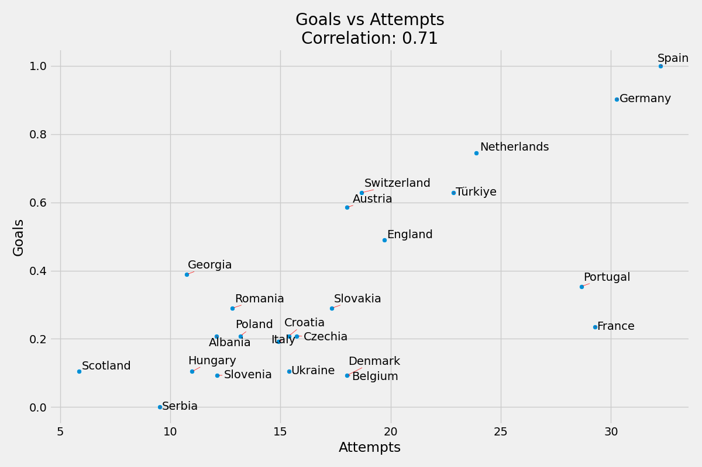
Maç Başına Gol ve Maç Başına Atak Sayısı
Skordaki yaklaşık ağırlığı yaklaşık 0.04’tür.
Maç Başına Gol ve Maç Başına Atak Sayısı korelasyonu %62’dir.
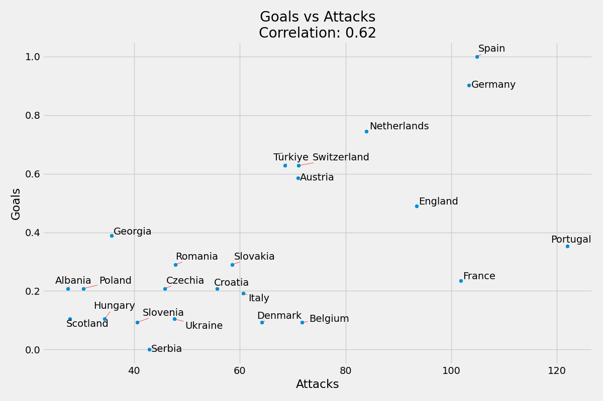
Maç Başına Gol ve Maç Başına Top Sürme Sayısı
Skordaki yaklaşık ağırlığı yaklaşık 0.06’dır.
Maç Başına Gol ve Maç Başına Top Sürme Sayısı korelasyonu %51’dir.
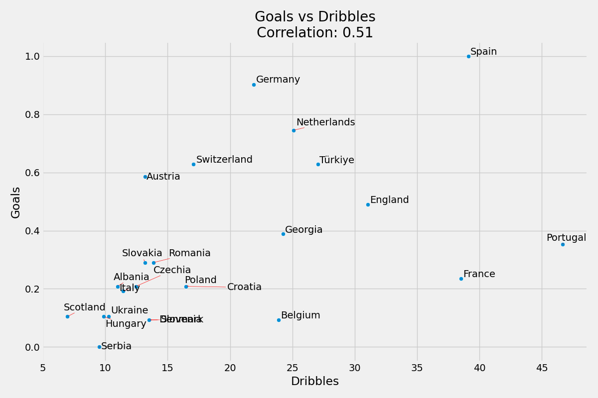
Maç Başına Gol ve Maç Başına Top Ele Geçirme Sayısı
Skordaki yaklaşık ağırlığı yaklaşık 0.06’dır.
Maç Başına Gol ve Maç Başına Top Ele Geçirme Sayısı korelasyonu %67’dir.
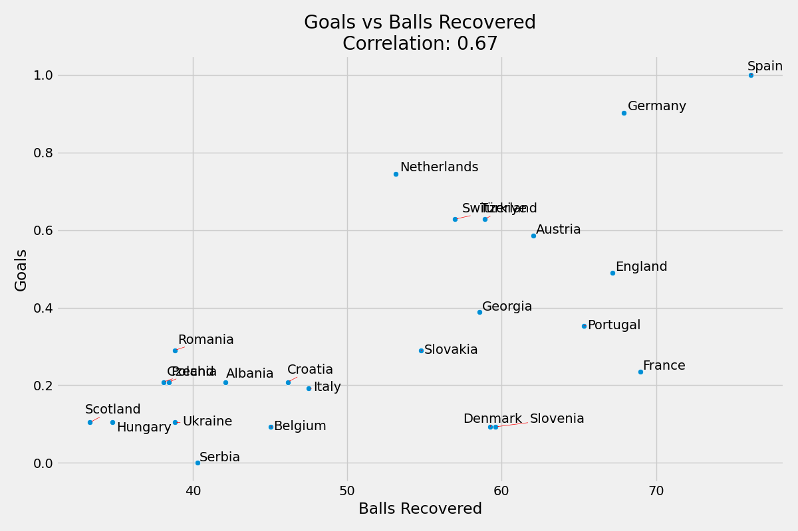
Maç Başına Gol ve Maç Başına Müdahale Sayısı
Skordaki yaklaşık ağırlığı yaklaşık 0.01’dir.
Maç Başına Gol ve Maç Başına Müdahale Sayısı korelasyonu %39’dur.
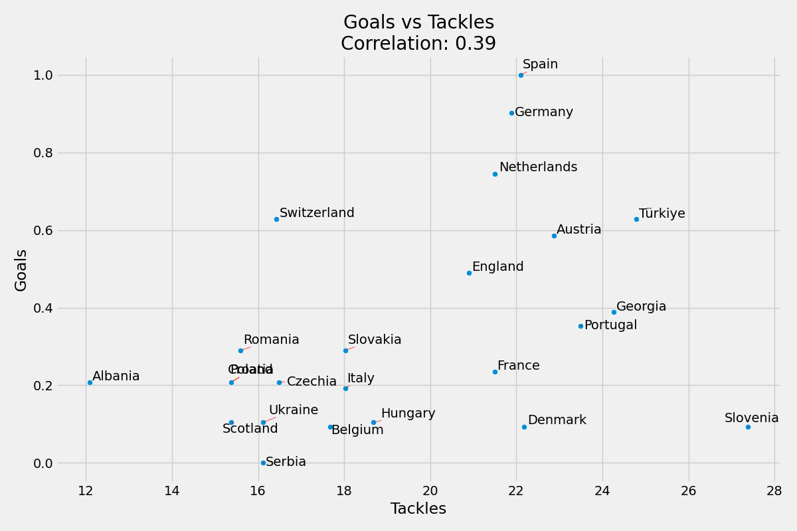
Maç Başına Gol ve Maç Başına Yapılan Fauller Sayısı
Skordaki yaklaşık ağırlığı yaklaşık 0.25’dir.
Maç Başına Gol ve Maç Başına Yapılan Fauller Sayısı korelasyonu %70’dir.
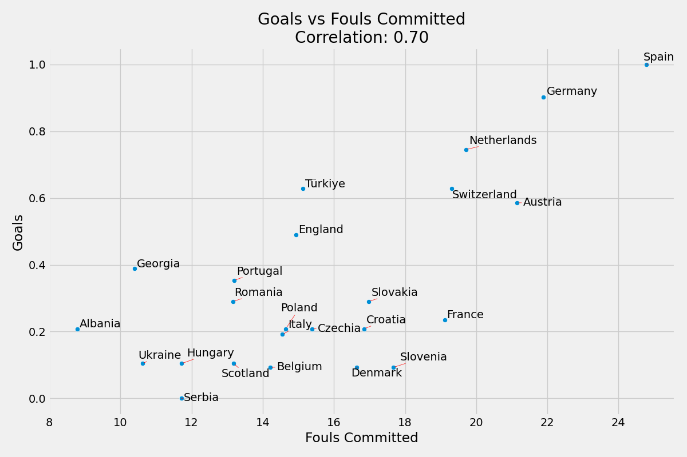
Maç Başına Gol ve Maç Başına Uğranılan Fauller Sayısı
Skordaki yaklaşık ağırlığı yaklaşık 0.22’dir.
Maç Başına Gol ve Maç Başına Uğranılan Fauller Sayısı korelasyonu %64’tür.
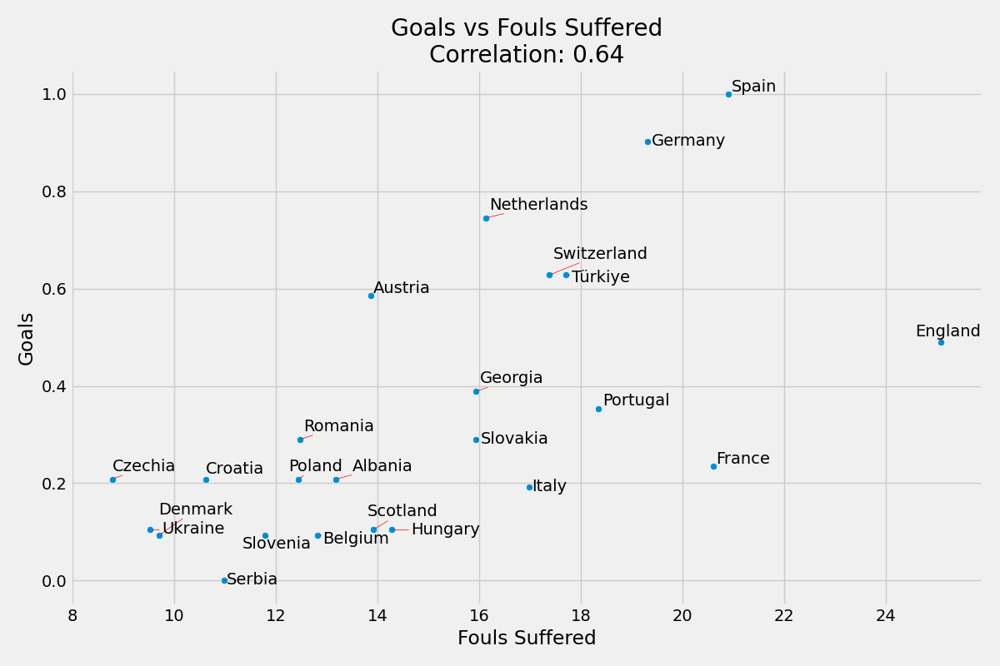
Maç Başına Gol ve Pas Yüzdesi
Skordaki yaklaşık ağırlığı yaklaşık 0.001’dir.
Maç Başına Gol ve Pas Yüzdesi korelasyonu %41’dir.
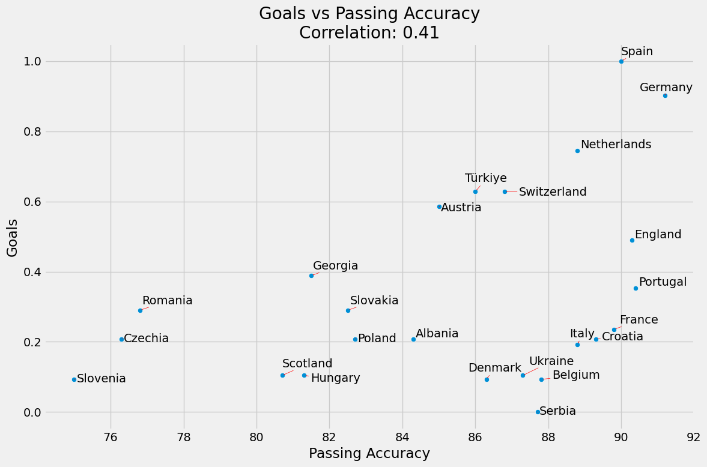
Maç Başına Gol ve Orta Açma Yüzdesi
Skordaki yaklaşık ağırlığı yaklaşık 0.13’tür.
Maç Başına Gol ve Orta Açma Yüzdesi korelasyonu %42’dir.
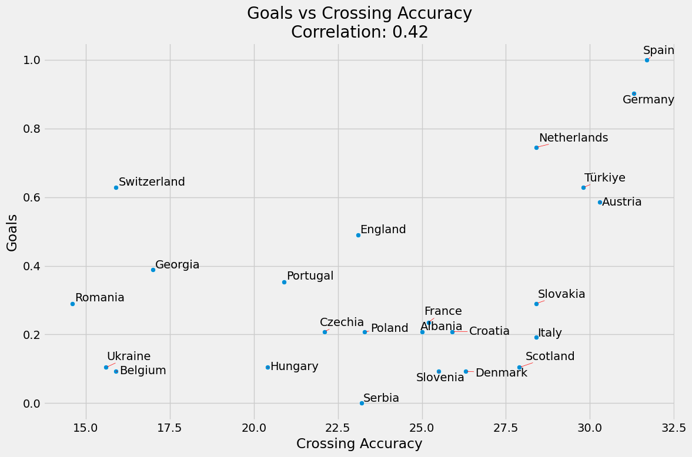
Takım Skorunu Hesaplayacak Fonksiyonun Yazılması
def calculate_score(df, weights, exclude_columns=[]):
columns_to_normalize = [col for col in df.columns if col not in exclude_columns]
df_normalized = df.copy()
df_normalized[columns_to_normalize] = scaler.fit_transform(df_normalized[columns_to_normalize])
for col in weights:
if col in df_normalized.columns:
df_normalized[col] *= weights[col]
df_normalized['Score'] = df_normalized[columns_to_normalize].sum(axis=1)
return df_normalized['Score']Yukarıdaki fonksiyon, verilen bir veri çerçevesindeki belirli ağırlıkları kullanarak bir skor hesaplar. Adımları şöyle özetleyebiliriz:
exclude_columnslistesi dışındaki tüm sütunları normalize eder.- Veri çerçevesinin kopyasını oluşturur (
df_normalized) ve normalize edilmeyen sütunları kopyalar. - Belirtilen sütunlardaki ağırlıkları (
weights) kullanarak normalize edilmiş sütun değerlerini çarpar. - Sütunlardaki bu değerleri toplayarak her satır için bir skor (
Score) değeri hesaplar. - Son olarak, hesaplanan skorları içeren bir seri olarak döndürür (
df_normalized['Score']).
Ağırlıkları Atayacak Fonksiyonun Yazılması
def generate_random_weights(columns):
weights = {col: np.random.rand() for col in columns}
total = sum(weights.values())
normalized_weights = {col: w / total for col, w in weights.items()}
return normalized_weightsYukarıdaki fonksiyon, verilen sütunlar için rastgele ağırlıklar oluşturur ve bu ağırlıkları normalize eder. Adımları şöyle özetleyebiliriz:
columnslistesinde bulunan her sütun için 0 ile 1 arasında rastgele ağırlıklar oluşturur.- Ağırlıklar bir sözlükte (
weights) saklanır. Burada anahtarlar sütun adları, değerler ise rastgele oluşturulan ağırlıklardır. - Tüm rastgele ağırlıkların toplamı (
total) hesaplanır. - Her ağırlık, toplam ağırlığa bölünerek normalize edilir ve normalize edilmiş ağırlıklar bir başka sözlükte (
normalized_weights) saklanır.
Modeli Kuracak Fonksiyonun Yazılması
def fit_model(df, dependent_col, independent_col):
X = df[independent_col]
y = df[dependent_col]
X = sm.add_constant(X)
model = sm.OLS(y, X).fit()
return model.rsquaredYukarıdaki fonksiyon, verilen bir veri çerçevesindeki bağımlı değişken ve bağımsız değişkenler kullanarak bir regresyon modeli oluşturur ve modelin \(R^2\) değerini döndürür. Adımları şöyle özetleyebiliriz:
independent_colbağımsız değişken sütunlarını vedependent_colbağımlı değişken sütununu veri çerçevesinden seçer.Xbağımsız değişkenleri,yise bağımlı değişkeni temsil eder.sm.add_constant(X)kullanılarak bağımsız değişkenlere bir sabit terim eklenir. Bu, regresyon modelinin kesişim noktasını hesaba katmasını sağlar.sm.OLS(y, X).fit()kullanılarak bir OLS regresyon modeli oluşturulur ve eğitilir.- Eğitilen modelin \(R^2\) değeri (
model.rsquared) döndürülür. \(R^2\), modelin bağımlı değişkendeki değişimi ne kadar iyi açıkladığını gösterir.
Fonksiyonları Çalıştıracak Döngünün Oluşturulması
for i in range(100000):
weights = generate_random_weights([
'Transformed Attempts',
'Transformed Attacks',
'Transformed Dribbles',
'Transformed Balls Recovered',
'Transformed Tackles',
'Transformed Fouls Committed',
'Transformed Fouls Suffered',
'Passing Accuracy',
'Crossing Accuracy'
])
df['Score'] = calculate_score(df, weights, exclude_columns=['Transformed Goals'])
r_squared = fit_model(df, 'Transformed Goals', 'Score')
results_df = pd.concat([results_df, pd.DataFrame({'Iteration': [i+1], 'Weights': [weights], 'R_squared': [r_squared]})], ignore_index=True)
best_iteration = results_df.loc[results_df['R_squared'].idxmax()]
best_weights = best_iteration['Weights']
sorted_best_weights = dict(sorted(best_weights.items(), key=lambda item: item[1]))
sorted_best_weights = {key.replace('Transformed ', ''): value for key, value in sorted_best_weights.items()}
plt.figure(figsize=(12, 8))
plt.barh(
list(sorted_best_weights.keys()),
list(sorted_best_weights.values()),
color='skyblue'
)
plt.xlabel('Weight')
plt.title('Best Weights for Goal Prediction Model')
plt.grid(True)
plt.tight_layout()
plt.show()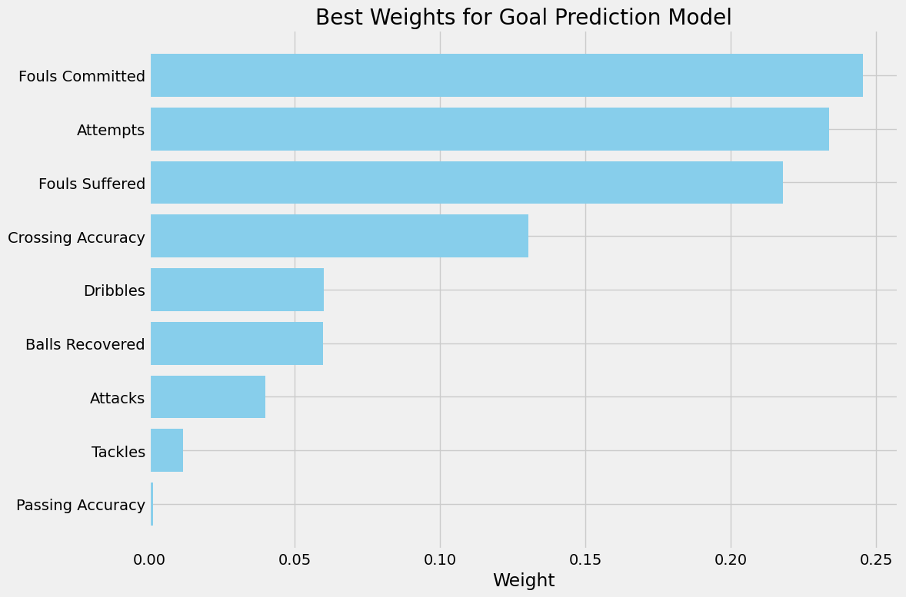
En İyi Modelin Yazdırılması
df['Score'] = calculate_score(df, best_weights, exclude_columns=['Transformed Goals'])
X = df['Score']
y = df['Transformed Goals']
X = sm.add_constant(X)
best_model = sm.OLS(y, X).fit()
print(best_model.summary())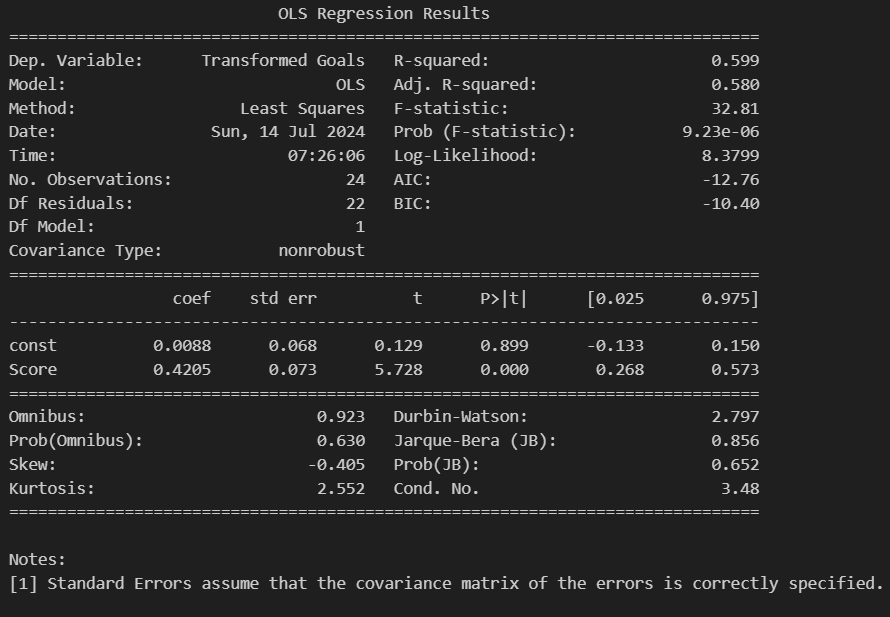
Gerçek ve Fit Edilen Değerlerin Görselleştirilmesi
plt.figure(figsize=(12, 8))
ax = sns.scatterplot(x=best_model.fittedvalues, y=df['Transformed Goals'], color='blue', alpha=0.7)
texts = []
for team, x, y in zip(df.index, best_model.fittedvalues, df['Transformed Goals']):
if team == 'Spain' or team == 'England':
texts.append(ax.text(x, y, team, color='white', ha='right', va='bottom', fontsize=10, bbox=dict(facecolor='red', alpha=0.5)))
else:
texts.append(ax.text(x, y, team, color='black', ha='right', va='bottom', fontsize=10))
adjust_text(texts, expand=(1, 4), arrowprops=dict(arrowstyle='->', color='gray', lw=0.5))
sns.lineplot(x=df['Transformed Goals'], y=df['Transformed Goals'], color='red', linestyle='--', linewidth=2, ax=ax)
plt.title('Goal Prediction Model Ahead of Euro 2024 Spain-England Final')
plt.xlabel('Fitted Values')
plt.ylabel('Actual Values')
plt.grid(True)
plt.tight_layout()
plt.show()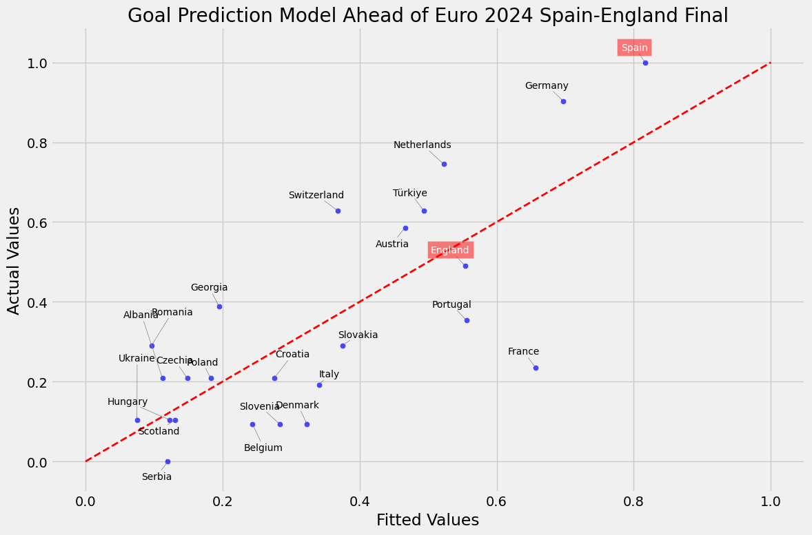
Gelecek içeriklerde görüşmek dileğiyle.